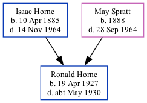

Ronald Leonard Horne 1927 - c1930 [ Home ] | [ Calendar ] | [ Surnames Index ] | [ Family History ]The youngest of 7 children of Isaac Horne (a hay trusser & thatcher heavy worker market gardener) and May Spratt Ronald Horne , the uncle of Nigel Horne , was born in Thanet, Kent, England on Apr 19, 19271,2 .
He died in Thanet c. May 19303,4 .
Parents Isaac was born on Apr 10, 1885May was born on Jan 1, 1888Citations England & Wales, Birth Index: 1916-2005 Online publication - Provo, UT, USA: The Generations Network, Inc., 2008.Original data - General Register Office. England and Wales Civil Registration Indexes. London, England: General Register Office. © Crown copyright. Published by permission of the Cont Other England & Wales deaths 1837-2007 - Findmypast England & Wales, Death Index: 1984-2005 Online publication - Provo, UT, USA: The Generations Network, Inc., 2007.Original data - General Register Office. England and Wales Civil Registration Indexes. London, England: General Register Office. © Crown copyright. Published by permission of the Cont Media England & Wales births 1837-2006 - BMD/B/1927/2/AZ/000601/116 England & Wales deaths 1837-2007 - BMD/D/1930/2/AZ/000417/091 Family Tree Map
Generated by Ged2Site . Last updated on Apr 1, 2025